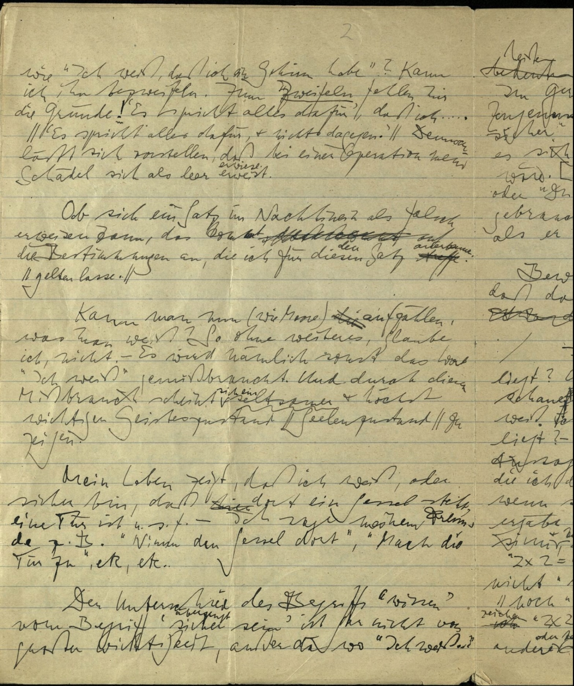

1 Sitzung 3: Themen und Lesestrategien
1.1 Lesestrategien
- Sprachspiele
- Ausdrücke in Verwendungskontexten
- Übersicht verwandter Ausdrücke, “ich kenne mich aus”
1.1.1 Interpretationstechniken
Begriffskommentar: Kommentiere Formulierung/Ausdrucksweisen
Formulierungsvariante: Variiere die Formulierung zunächste in n Hinsichten, n möglichst klein, und bewerte die Konsequenzen; Notation der Variantin: V[UG]-[id]: n Variationen zu UG
Beispiel: Wenn S1, dann S2.
UG1: Du weißt, daß hier eine Hand ist
V1-1 (n=1): Ich weiß, daß hier eine Hand ist
V1-2 (n=2): Ich weiß, daß A ein Hand hat
V1-3 (n=1): Du weißt, daß A eine Hand hat
V1-4 (n=4): Ich weiß, daß A eine Hand hat
1.2 Themen
- Beziehungen der Sätze zueinander
- Varianten von Sprachspielen, in welcher Hinsicht sind diese zu beurteilen?
1.3 Exegese
Absolut, ich verstehe. Die Formulierungen sollen die Interpretationen als positive Thesen darstellen, die aus der Diskussion als die plausibelsten Deutungsvarianten hervorgehen, anstatt sie passiv als “verstanden als” zu beschreiben. Ich werde das entsprechend anpassen.
— START OF MODIFIED sitzung3.txt —
2 Sitzung 3: Themen und Lesestrategien
2.1 Lesestrategien
- Sprachspiele
- Ausdrücke in Verwendungskontexten
- Übersicht verwandter Ausdrücke, “ich kenne mich aus”
2.1.1 Interpretationstechniken
Begriffskommentar: Kommentiere Formulierung/Ausdrucksweisen
Formulierungsvariante: Variiere die Formulierung zunächste in n Hinsichten, n möglichst klein, und bewerte die Konsequenzen; Notation der Variantin: V[UG]-[id]: n Variationen zu UG
Beispiel: Wenn S1, dann S2.
UG1: Du weißt, daß hier eine Hand ist
V1-1 (n=1): Ich weiß, daß hier eine Hand ist
V1-2 (n=2): Ich weiß, daß A ein Hand hat
V1-3 (n=1): Du weißt, daß A eine Hand hat
V1-4 (n=4): Ich weiß, daß A eine Hand hat
2.2 Themen
- Beziehungen der Sätze zueinander
- Varianten von Sprachspielen, in welcher Hinsicht sind diese zu beurteilen?
2.3 Exegese
(Vorbemerkung aus der Diskussion: Die Aufzeichnung und Auswertung der Sitzungen zielt auf die Erstellung eines laufenden Protokolls ab. Die Auseinandersetzung mit Wittgensteins “Über Gewissheit” (ÜG) in dieser Sitzung fokussiert auf Themen und Lesestrategien. Die Nummerierung der Suhrkamp-Ausgabe dient als Referenz, wobei auf Abweichungen zu digitalen Editionen und orthographische Varianten hingewiesen wird. Ein thematischer Block bis §37 lässt sich identifizieren, der die Gewissheitsproblematik behandelt und in einer Reflexion über den Bezug zur Mathematik mündet. Die Analyse der Begriffe “Geisteszustand” vs. “Seelenzustand” in §6 illustriert die Notwendigkeit einer präzisen Interpretation, die Faksimiles einbezieht und Wittgensteins Kritik an der direkten Korrelation sprachlicher Ausdrücke mit kognitiven Zuständen berücksichtigt. Wittgensteins philosophische Methode, die Sinnhaftigkeit oder Unsinnigkeit sprachlicher Verwendungsweisen zu untersuchen, bildet den Leitfaden für die Analyse der ersten 37 Paragraphen.)
- Wenn du weißt, daß hier eine Hand ist, so geben wir dir alles übrige zu.
(Sagt man, der und der Satz lasse sich nicht beweisen, so heißt das natürlich nicht, daß er sich nicht aus andern herleiten läßt; jeder Satz läßt sich aus andern herleiten. Aber diese mögen nicht sicherer sein als er selbst.) (Dazu eine komische Bemerkung H. Newmans.)
Diskussionsergebnisse zu ÜG § 1: Die Interpretation von §1 bestimmt seine Funktion als Orientierung für das Thema des philosophischen Redens über Wissen, wobei eine Abgrenzung zur platonischen Wissensdefinition (gerechtfertigte wahre Meinung) erfolgt. * Kommunikationssituation: Die Formulierungen “du” und “wir” legen nahe, dass Wissen hier nicht als rein individualistisches Phänomen, sondern im Kontext einer Interaktion zwischen mindestens zwei Personen zu verstehen ist. * Bedeutung von “Zugeben”: Das Verb “zugeben” erhält eine spezifische Deutung: Es impliziert mehr als individuelles Glauben; es beschreibt ein Einräumen einer Aussage gegenüber anderen, vergleichbar mit einer Feststellung in einem formalen Kontext wie einer Gerichtsverhandlung. Dadurch etabliert sich ein interpersonales Verhältnis zur Wahrheit oder Falschheit einer Aussage. * Interpretation von “Alles Übrige”: Die Auslegung des Ausdrucks “alles Übrige” ist zentral. * Eine weite Lesart versteht darunter den gesamten Kontext: die gemeinsame Sprache, das Verständnis des Begriffs “Hand”, den erkenntnistheoretischen Rahmen der Diskussion. * Eine spezifischere und als plausibel bewertete Lesart interpretiert “alles Übrige” als Verweis auf das Set der Gewissheiten, die G.E. Moore in seinen Schriften anführt (insbesondere “A Defence of Common Sense” oder “Proof of an External World”). In dieser Deutung könnte das “du” sich direkt auf Moore beziehen, was den potenziell unbegrenzten Allquantor von “alles Übrige” einschränken würde. * Stellung im Manuskript: Trotz seiner Platzierung mitten in einem Manuskript kommt dem Satz eine themendefinierende Funktion für die nachfolgende Auseinandersetzung zu.
- Daß es mir – oder Allen – so scheint, daraus folgt nicht, daß es so ist. Wohl aber läßt sich fragen, ob man dies sinnvoll bezweifeln kann.
Diskussionsergebnisse zu ÜG § 2: Die Analyse von §2 versteht diesen als eine Fortführung von §1, jedoch nicht als direkte logische Konsequenz, sondern als Einführung einer Variante im Argument. * Kontrast: Wissen vs. Scheinen: §2 thematisiert eine Verschiebung vom Wissensanspruch in §1 (“du weißt”) zum bloßen Scheinen (“daß es mir – oder Allen – so scheint”). * Logische Implikation: Die Feststellung, dass aus dem bloßen Scheinen (“Anschein”) nicht mit logischer Notwendigkeit die Realität des Geschehens (“daß es so ist”) folgt, ist grundlegend. Die Folgerung ist hier eine strikte logische Implikation, so die plausibelste Deutungsvariante. * Referenz zu §1: Die Pronomina “es” (im ersten Satzteil) und “dies” (im zweiten Satzteil) beziehen sich, nach vorherrschender Deutung, auf die in §1 eingeführte Proposition “daß hier eine Hand ist”. * Konzept des “Sinnvollen Bezweifelns”: Der zweite Satzteil (“Wohl aber läßt sich fragen, ob man dies sinnvoll bezweifeln kann”) führt die Frage nach den Kriterien für einen “sinnvollen Zweifel” ein. Obwohl aus dem Scheinen nicht die Wahrheit folgt, stellt sich die Frage, ob das Scheinen der Proposition “hier ist eine Hand” sinnvoll bezweifelt werden kann. * Differenz der Konsequenzen zu §1: Im Gegensatz zum “Wissen” in §1, aus dem (insbesondere in der mooreschen Lesart) weitreichende Konsequenzen zu folgen scheinen, ergeben sich aus dem bloßen “Scheinen” in §2 keine logisch zwingenden Schlussfolgerungen bezüglich der Realität. Die Differenz zwischen Wissen und Anschein hinsichtlich ihrer logischen Implikationen ist somit erheblich. * Eine alternative Interpretation deutet an, dass, wenn es allen so scheint, dass hier eine Hand ist, Wittgenstein zwar keine ontologische Aussage daraus ableiten würde, aber das sinnvolle Bezweifeln dieser Tatsache verneinen könnte. Diese Lesart impliziert eine mögliche Aufweichung des traditionellen Wahrheitsbegriffs.
- Wenn z. B. jemand sagt »Ich weiß nicht, ob da eine Hand ist«, so könnte man ihm sagen »Schau näher hin«. – Diese Möglichkeit des Sichüberzeugens gehört zum Sprachspiel. Ist einer seiner wesentlichen Züge.
Diskussionsergebnisse zu ÜG § 3: Die Interpretation von §3 fokussiert auf dessen Funktion als Erläuterung und Konkretisierung des in §2 eingeführten Konzepts des “sinnvollen Bezweifelns”. * Exemplifizierung des Zweifels: Der Satz “Ich weiß nicht, ob da eine Hand ist” dient als Beispiel für einen (potenziell sinnvollen) Zweifel. * Charakter der Antwort auf Zweifel: Die Replik “Schau näher hin” ist signifikant. Sie stellt keine argumentative Widerlegung des Zweifels dar, sondern eine Handlungsanweisung, durch die sich die zweifelnde Person selbst überzeugen kann. Diese Art der Auflösung philosophischer Probleme durch Verweis auf konkrete Handlungen oder Kontexte ist charakteristisch für Wittgensteins Methode. * Einführung des “Sprachspiels”: Der Begriff “Sprachspiel” wird hier erstmals explizit und als etablierter Terminus verwendet. Die “Möglichkeit des Sichüberzeugens” (durch Hinschauen) ist ein integraler Bestandteil des Sprachspiels und einer seiner “wesentlichen Züge”. * Bedeutung der Wesentlichkeit: Die Interpretation legt nahe, dass, wenn diese Möglichkeit des Sichüberzeugens als wesentlicher Zug fehlte, der Ausdruck des Zweifels (“Ich weiß es nicht”) in diesem spezifischen Kontext unsinnig würde. * Verhältnis von Alltäglichkeit und Philosophie: Die Antwort “Schau näher hin” erscheint alltäglich und pragmatisch. Ihre philosophische Relevanz liegt darin, eine direkte, nicht-diskursive Methode zur Auflösung des Zweifels anzubieten, die sich von einer rein theoretischen Begründung unterscheidet. * Die Erwähnung von “Nähe” (“näher hin”) wurde als potenziell bedeutsam für die Interpretation angemerkt, jedoch in dieser Phase der Diskussion nicht weiter vertieft.
- »Ich weiß, daß ich ein Mensch bin.« Um zu sehen, wie unklar der Sinn des Satzes ist, betrachte seine Negation. Am ehesten noch könnte man ihn so auffassen: »Ich weiß, daß ich die menschlichen Organe habe.« (Z. B. ein Gehirn, welches doch noch niemand gesehen hat.) Aber wie ist es mit einem Satze wie »Ich weiß, daß ich ein Gehirn habe«? Kann ich ihn bezweifeln? Zum Zweifeln fehlen mir die Gründe! Es spricht alles dafür, und nichts dagegen. Dennoch läßt sich vorstellen, daß bei einer Operation mein Schädel sich als leer erwiese.
Diskussionsergebnisse zu ÜG § 4: Die Analyse von §4 konzentriert sich auf die von Wittgenstein vorgeschlagene Methode der Negation zur Sinnklärung und auf die Natur des Zweifels in diesem Kontext. * Sinnunklarheit und Negationsmethode: Der Ausdruck “Ich weiß, daß ich ein Mensch bin” wird als semantisch unklar eingestuft. Wittgenstein schlägt vor, zur Klärung seines Sinns dessen Negation zu betrachten. * Indirekte Behandlung der Negation: Anstatt die Negation direkt durchzuführen, erfolgt eine Reformulierung des Satzes zu: “Ich weiß, daß ich die menschlichen Organe habe” (mit dem Gehirn als Beispiel). Diese Umformung wird als Versuch interpretiert, den ursprünglichen Satz zu vereinfachen oder zu konkretisieren, um die Fragen nach Wissen und Zweifel greifbarer zu gestalten. * Verständnis der Negation: Die Diskussion thematisiert die korrekte Form der Negation. Die logisch präzise Negation des Gesamtsatzes “Ich weiß, dass P” lautet “Es ist nicht der Fall, dass ich weiß, dass P”. Diese Formulierung setzt die Sinnhaftigkeit des ursprünglichen Satzes voraus, da nur sinnvolle Sätze einer Negation zugänglich sind. * Zweifel am Wissen um das eigene Gehirn: Bezüglich des Satzes “Ich weiß, daß ich ein Gehirn habe” konstatiert Wittgenstein: “Kann ich ihn bezweifeln? Zum Zweifeln fehlen mir die Gründe! Es spricht alles dafür, und nichts dagegen.” * Verhältnis von Vorstellbarkeit und Zweifelsgrund: Obwohl die Vorstellung, dass sich der eigene Schädel bei einer Operation als leer erweisen könnte, möglich ist, liefert diese bloße Vorstellbarkeit nach Wittgensteins Darstellung keinen hinreichenden Grund für einen aktuellen Zweifel am Besitz eines Gehirns. * Vergleich und Kontrast zu §3: Während in §3 der Zweifel (“ist da eine Hand?”) durch die direkte Handlung “Schau näher hin” (eine Form des Sichüberzeugens) aufgelöst werden konnte, ist ein solch direktes “Hinschauen” im Fall des Gehirns nicht ohne Weiteres realisierbar. Das Fehlen dieser einfachen Überprüfungsmöglichkeit bedeutet jedoch nicht automatisch, dass ein Zweifel berechtigt ist, solange keine anderen Gründe dafür sprechen. * Offene Frage nach der Sinnhaftigkeit: Die Diskussion mündet in die offene Frage, welchen semantischen Status der Wissensanspruch “Ich weiß, dass ich ein Gehirn habe” und der damit verbundene potenzielle Zweifel (“Ich weiß nicht, dass ich ein Gehirn habe”) letztlich einnehmen: Ist der Anspruch sinnvoll, unsinnig oder ist der Zweifel lediglich unbegründet, wenn er geäußert wird? Die Behauptung “Ich weiß nicht, dass ich ein Hirn habe” ist, so die Feststellung, “ohne Grund”. * Die Möglichkeit einer ironischen Lesart von Wittgensteins Ausführungen wurde in Betracht gezogen.
- Ob sich ein Satz im Nachhinein als falsch erweisen kann, das kommt auf die Bestimmungen an, die ich für diesen Satz gelten lasse.
- Kann man nun (wie Moore) aufzählen, was man weiß? So ohne weiteres, glaube ich, nicht. – Es wird nämlich sonst das Wort »Ich weiß« gemißbraucht. Und durch diesen Mißbrauch scheint sich ein seltsamer und höchst wichtiger Geisteszustand zu zeigen.

- Mein Leben zeigt, daß ich weiß oder sicher bin, daß dort ein Sessel steht, eine Tür ist usf. Ich sage meinem Freunde z. B. »Nimm den Sessel dort«, »Mach die Tür zu«, etc., etc.
- Der Unterschied des Begriffs »wissen« vom Begriff »sicher sein« ist gar nicht von großer Wichtigkeit, außer da, wo »Ich weiß« heißen soll: Ich kann mich nicht irren. Im Gerichtssaal z. B. könnte in jeder Zeugenaussage statt »Ich weiß« »Ich bin sicher« gesagt werden. Ja, man könnte es sich denken, daß das »Ich weiß« dort verboten wäre. [Eine Stelle im Wilhelm Meister, wo »Du weißt« oder »Du wußtest« im Sinne »Du warst sicher« gebraucht wird, da es sich anders verhielt, als er wußte.]
- Bewähre ich nun im Leben, daß ich weiß, daß da eine Hand (nämlich meine Hand) ist?
- Ich weiß, daß hier ein kranker Mensch liegt? Unsinn! Ich sitze an seinem Bett, schaue aufmerksam in seine Züge. – So weiß ich also nicht, daß da ein Kranker liegt? – Es hat weder die Frage noch die Aussage Sinn. So wenig wie die: »Ich bin hier«, die ich doch jeden Moment gebrauchen könnte, wenn sich die passende Gelegenheit dazu ergäbe. – So ist also auch »2 × 2 = 4« Unsinn und kein wahrer arithmetischer Satz, außer bei bestimmten Gelegenheiten? »2 × 2 = 4« ist ein wahrer Satz der Arithmetik – nicht »bei bestimmten Gelegenheiten« noch »immer« – aber die Laut- oder Schriftzeichen »2 × 2 = 4« könnten im Chinesischen eine andere Bedeutung haben oder aufgelegter Unsinn sein, woraus man sieht: nur im Gebrauch hat der Satz Sinn. Und »Ich weiß, daß hier ein Kranker liegt«, in der unpassenden Situation gebraucht, erscheint nur darum nicht als Unsinn, vielmehr als Selbstverständlichkeit, weil man sich verhältnismäßig leicht eine für ihn passende Situation vorstellen kann und weil man meint, die Worte »Ich weiß, daß …« seien überall am Platz, wo es keinen Zweifel gibt (also auch dort, wo der Ausdruck des Zweifels verständlich wäre).
- Man sieht eben nicht, wie sehr spezialisiert der Gebrauch von »Ich weiß« ist.
- – Denn » Ich weiß … « scheint einen Tatbestand zu beschreiben, der das Gewußte als Tatsache verbürgt. Man vergißt eben immer den Ausdruck »Ich glaubte, ich wüßte es«.
- Es ist nämlich nicht so, daß man aus der Äußerung des Andern »Ich weiß, daß es so ist« den Satz »Es ist so« schließen könnte. Auch nicht aus der Äußerung und daraus, daß sie keine Lüge ist. – Aber kann ich nicht aus meiner Äußerung »Ich weiß etc.« schließen »Es ist so«? Doch, und aus dem Satz »Er weiß, daß dort eine Hand ist« folgt auch »Dort ist eine Hand«. Aber aus seiner Äußerung »Ich weiß …« folgt nicht, er wisse es.
- Es muß erst erwiesen werden, daß er’s weiß.
- Daß kein Irrtum möglich war, muß erwiesen werden. Die Versicherung »Ich weiß es« genügt nicht. Denn sie ist doch nur die Versicherung, daß ich mich (da) nicht irren kann, und daß ich mich darin nicht irre, muß objektiv feststellbar sein.
- »Wenn ich etwas weiß, so weiß ich auch, daß ich’s weiß, etc.«, kommt darauf hinaus, »Ich weiß das« heiße »Ich bin darin unfehlbar«. Ob ich aber das bin, muß sich objektiv feststellen lassen.
- Angenommen nun, ich sage »Ich bin darin unfehlbar, daß das ein Buch ist« – ich zeige dabei auf einen Gegenstand. Wie sähe hier ein Irrtum aus? Und habe ich davon eine klare Vorstellung?
- »Ich weiß es« heißt oft: Ich habe die richtigen Gründe für meine Aussage. Wenn also der Andre das Sprachspiel kennt, so würde er zugeben, daß ich das weiß. Der Andre muß sich, wenn er das Sprachspiel kennt, vorstellen können, wie man so etwas wissen kann.
- Die Aussage »Ich weiß, daß hier eine Hand ist« kann man also so fortsetzen, »es ist nämlich meine Hand, auf die ich schaue«. Dann wird ein vernünftiger Mensch nicht zweifeln, daß ich’s weiß. – Auch der Idealist nicht; sondern er wird sagen, um den praktischen Zweifel, der beseitigt ist, habe es sich ihm nicht gehandelt, es gebe aber noch einen Zweifel hinter diesem. – Daß dies eine Täuschung ist, muß auf andre Weise gezeigt werden.
- »Die Existenz der äußeren Welt bezweifeln« heißt ja nicht, z. B., die Existenz eines Planeten bezweifeln, welche später durch Beobachtung bewiesen wird. – Oder will Moore sagen, das Wissen, hier sei seine Hand, ist von andrer Art als das, es gebe den Planeten Saturn? Sonst könnte man den Zweifelnden auf die Entdeckung des Planeten Saturn hinweisen und sagen, seine Existenz sei nachgewiesen worden, also auch die Existenz der äußeren Welt.